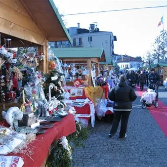

da sab 28 nov a dom 20 dic
La magia del Natale: Natale a Tarcento 2026
Torna il Natale a Tarcento con i suoi mercatini e tante attività di intrattenimento per grandi e piccini. Programma
 Indicazioni
Indicazioni
- Costi e prenotazioni
- Costo non indicato · Prenotazione non indicata
- Programma
- Programma da verificare. Apri la fonte ufficiale per orari e possibili aggiornamenti.
- In caso di maltempo
- Nessuna indicazione specifica pubblicata.
- Note
- Acquisito automaticamente dalla fonte.
L’EVENTO
Descrizione completa
Torna il Natale a Tarcento con i suoi mercatini e tante attività di intrattenimento per grandi e piccini.
PROGRAMMA
28/11 ore 09.00 Apertura Mercatini di Natale a cura della Pro Loco Tarcento A.P.S. ore 18.00 PIAZZA ROMA: ACCENSIONE DELL’ALBERO DI NATALE con la presenza delle autorità dei paesi gemellati: Bovec (SLO), Arnoldstein (A) e Unterföhring (D). Intrattenimento musicale con la Banda di Coja e inaugurazione del presepe sotto gli uffici comunali. Arrivo di Babbo Natale e distribuzione di caramelle a cura del Lions club Tarcento - Tricesimo; Piazza Roma: Sotto gli uffici comunali, dal 25/11/2026 al 15/12/2027: “Laboratorio Artigiano del Presepe”, aperto al pubblico tutti i fine settimana.
29/11 ore 09.00 Mercatini di Natale
ore 15.30 Intrattenimento musicale con “MARIANO”
4/12 ore 09.00 – 13.00 Mercatini di Natale
5/12 o re 09.00 Mercatini di Natale dalle ore 09.30 I MADONNARI porteranno l’arte nelle strade della città, accompagnando il pubblico con colori, creatività e spettacolo
6/12 ore 09.00 Mercatini di Natale dalle ore 09.30 continua l’arte di strada con I MADONNARI; ore 17.30 Spettacolo itinerante a cura della Compagnia Teatrale Accademia creativa di Perugia trasformando la città in un palcoscenico a cielo aperto
8/12 ore 09.00 Mercatini di Natale ore 15.30 intrattenimento musicale con “RENATO FERRO
11/12 ore 09.00 – 13.00 Mercatini di Natale
12/12 ore 09.00 Mercatini di Natale
13/12 ore 09.00 Mercatini di Natale
ore 14.30 esibizione con il mago DEDA con giochi, baby dance e spettacoli di magìa
18/12 ore 09.00 – 13.00 Mercatini di Natale
19/12 ore 09.00 Mercatini di Natale”
dalle ore 14.00 castagnata a cura del Gruppo Alpini di Tarcento
20/12 ore 09.00 Mercatini di Natale” d
ore 15.00 Intrattenimento musicale con “LADY V. L’EMOZIONE IN MUSICA”
ore 17.00 arrivo di BABBO NATALE e distribuzione di caramelle a tutti i bimbi presenti
IL PROGRAMMA
Programma e orari
Appuntamenti raccolti dalle fonti elencate. Dove manca un orario, non è ancora disponibile in questa scheda.
Programma pubblicato
- ore 09.00 Mercatini di Natale
- ore 15.30 Intrattenimento musicale con “MARIANO”
- ore 09.00 – 13.00 Mercatini di Natale
- ore 09.00 Mercatini di Natale ore 15.30 intrattenimento musicale con “RENATO FERRO
- ore 15.30 Intrattenimento musicale con “NEVIO”
- ore 14.30 esibizione con il mago DEDA con giochi, baby dance e spettacoli di magìa
- ore 15.30 intrattenimento musicale con “SIMONE”
- ore 15.30 Intrattenimento musicale con “MANRICO”
- ore 09.00 Mercatini di Natale” d
- ore 15.00 Intrattenimento musicale con “LADY V. L’EMOZIONE IN MUSICA”
- ore 17.00 arrivo di BABBO NATALE e distribuzione di caramelle a tutti i bimbi presenti
INFORMAZIONI UTILI
Prima di partire
- Controllare la fonte prima di partire.
ORGANIZZAZIONE